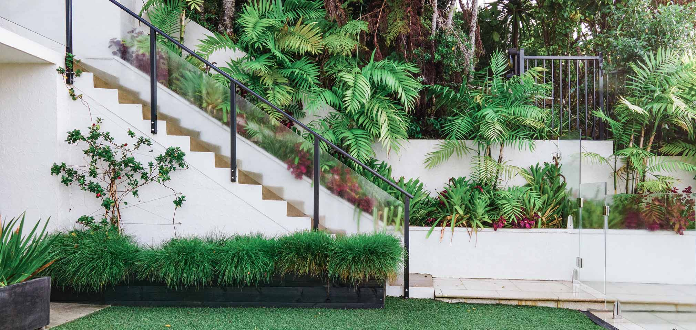
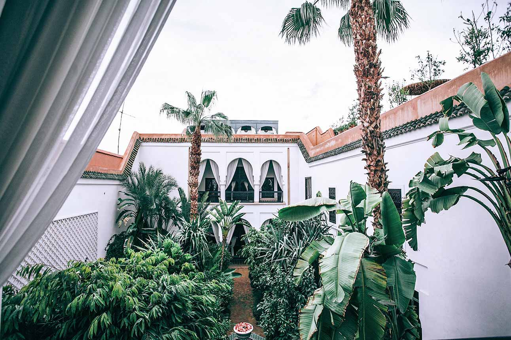
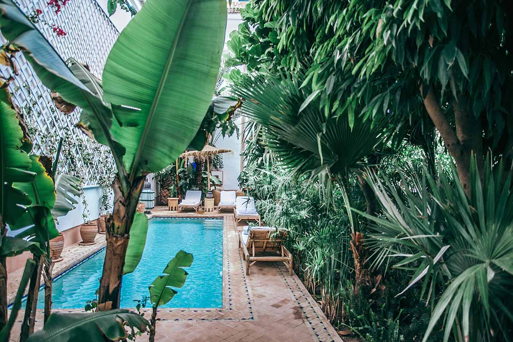

Three properties. One riverside vision. A bold transformation of Lake Austin’s most iconic estate, where luxury, topography, and native ecology converge into a singular, high-performing landscape.
client
Mike Rypka
style
Contemporary Native
service
Design/Consultation

About the project
Perched above the Colorado River, this $25 million estate—now Austin’s most talked-about listing—was once three separate parcels. Over time, we played a lead role in each one: from supporting early landscape design to eventually envisioning the entire compound. Our work brought cohesion and creativity across sloping terrain, blending high-end design, native ecology, and whimsical functionality into a singular experience.
Project Story
Initially hired under Structure Landscapes, our involvement began with design and site overview for the original home. Later, as the client acquired the two adjacent lots—including a vacant cliffside—we were brought in to lead the redesign of the full compound under our own firm, Golman Universal (formerly I Deal Designs). Our scope included everything from guesthouse placements to light-infused limestone staircases, boat dock access, and a trinity of cliffside waterfalls that converge in a striking natural display.

The client, a bold entrepreneur with a flair for art, music, and entertaining, needed outdoor spaces that could flex between intimate seclusion and large-scale events. We designed hidden putting greens that doubled as dance floors, screen walls that lowered into performance stages, and bonfire zones nestled into wild native pockets. Across three lots, visitors flow between manicured pavilions and rugged overlooks, all connected by winding stairs, lighted terraces, and eco-restorative plantings.
What began as supporting design work evolved into a full-scale, multi-year leadership role—merging three neighboring properties into one private compound. Golman Universal, led the full site integration through design and ongoing consulting.
Challenges & solutions
Our design intent was to create an immersive outdoor experience that reflects the client's bold, artistic personality—while harmonizing native Central Texas ecology with sculptural form, playful functionality, and dynamic event versatility.
Transforming three steep, disconnected riverfront properties into a cohesive, vibrant estate required careful coordination between design vision, natural topography, and jurisdictional limitations. We embraced these constraints as creative opportunities, using them to shape unique solutions that brought the client’s larger-than-life personality into the land itself. Here are some of those key challeneges and our creative solitions.
Topography & Access The central property lacked road access and featured severe slopes. We solved this by reimagining driveways and designing sculptural staircases that wound through heritage oaks with integrated lighting and landings.
Jurisdictional Approvals Navigating permits across four governing bodies (City of Austin, City of Westlake, LCRA, and the HOA) was a time-consuming process. We created phased plans to maintain momentum while securing all necessary approvals.
Hydrology & Drainage Significant grade change and proximity to the river required advanced water management. We used solar-powered pumps, native creek beds, and multi-tier waterfalls that respected the land’s natural flow while delivering visual drama.
Multifunctional Programming The space needed to entertain large crowds while still feeling intimate at rest. We incorporated hidden features—like a stage that folds from a putting green, private nooks at every elevation, and gathering zones that scale naturally with group size.
Ecological Integration To maintain a sense of wildness, we preserved and restored native vegetation, integrated artful xeriscaping, and kept the central lot largely untouched to act as a natural buffer between high-traffic zones.

Outcome
The compound is built to dazzle, but we designed it to endure. Our favorite moment? The feeling of walking from a polished interior into wild nature—discovering art, light, and life at every elevation. Here's what makes that happe:
Limestone Staircase winding around a 150-year-old oak, acting as both circulation and sculpture
Waterfall System spanning the cliffside and flowing to the river
Putting Green Dance Floor with retractable walls converting to a stage
Hidden Casitas & Firepit Terraces nestled into the tress around the top of the central lot
Pop Art Sculptures paired with curated specimen plantings
Seamless Transitions between three distinct parcels, each with a dock
By the end, every constraint became a canvas for innovation, resulting in a one-of-a-kind property that invites exploration, connection, and awe—day or night.